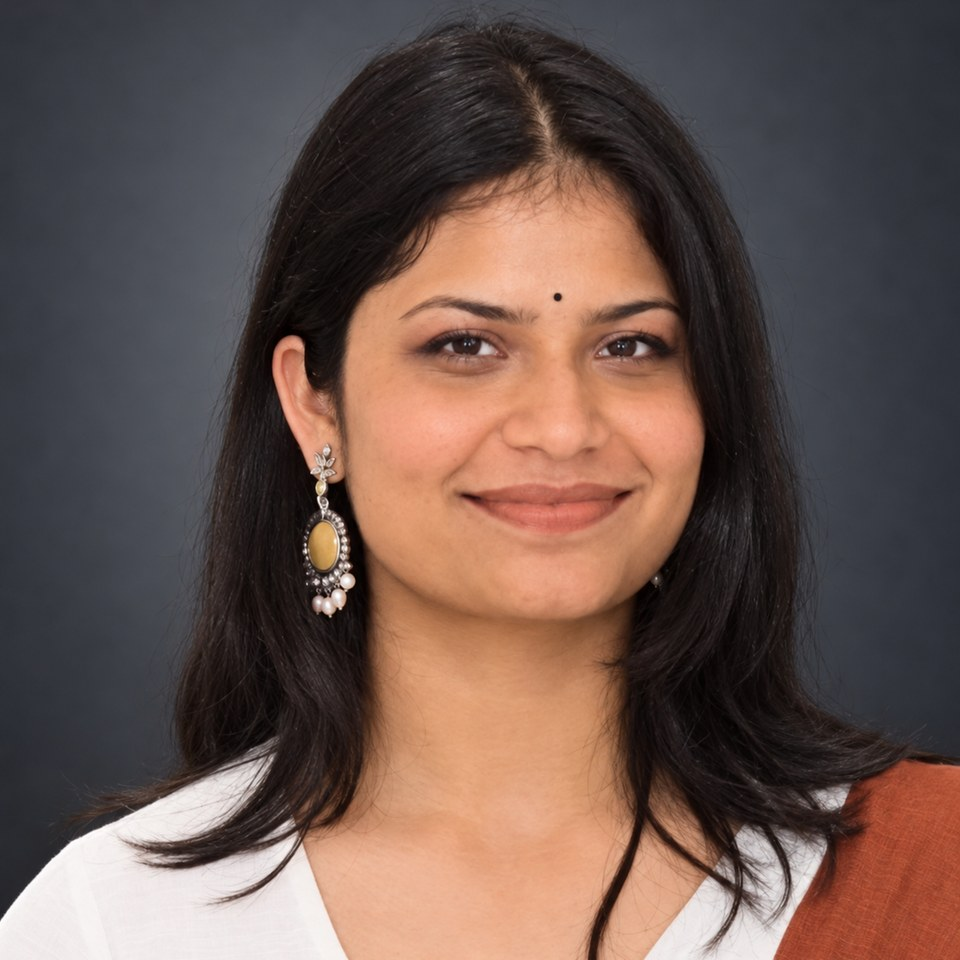
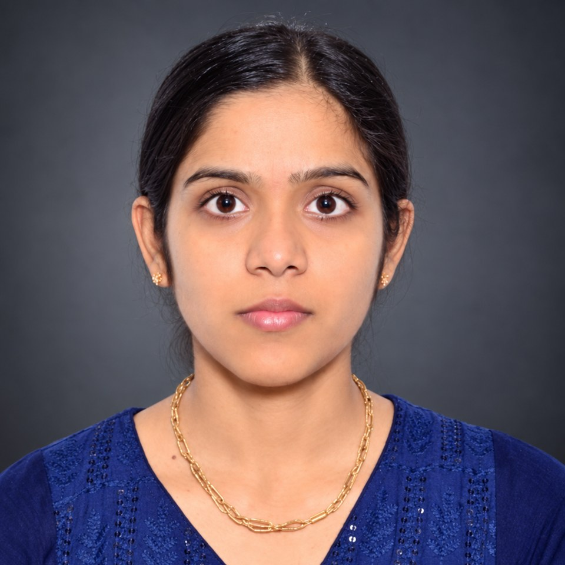

People
Research group in the Department of Physics & Astronomical Sciences, Central University of Jammu. Three PhDs awarded; four candidates currently pursuing doctoral research, and two M.Sc. dissertation students.

Prof. Ashish K Sharma
Department of Physics & Astronomical Sciences, Central University of Jammu
Ph.D. — IIT Delhi (2013) | Lindau Nobel Laureate Meeting Alumni (2019)
“Research-active courses taught with direct reference to current experimental results — making the laboratory and the lecture hall a continuous learning environment.”
PhD Students (Pursuing)


The group also supervises M.Tech, M.Sc., and B.Tech project students.
M.Sc. Project Students
Dissertation students working on carbon nanotubes from the two ends the group usually works from at once — one calculating what the material should do, the other growing it.


PhD Degrees Awarded

Dr. Navneet Kumar

Dr. Vaishali Rathi

Dr. Kamal Singh
Additionally supervised approximately 20 M.Tech, M.Sc., and B.Tech student projects across IUAC New Delhi, UPES Dehradun, and Central University of Jammu.
National & International Partners
Each partnership supplies a capability the group does not hold in-house — transmission electron microscopy of irradiated devices, synchrotron spectroscopy, ultra-high-vacuum device fabrication.
National
Dr. D. Kanjilal & Dr. K. Asokan
Swift heavy ion irradiation, in-situ characterisation and defect kinetics. The longest-running partnership in the programme and the source of the beam time the in-situ work depends on.
Dr. Seema Vinayak & Dr. D. S. Rawal
GaN device fabrication and AlGaN/GaN HEMT radiation effects. SSPL fabricates; the group characterises and reports back. The delivery route for the DRDO CARS contact work.
Dr. Rupesh Chaubey
Device processing and characterisation of GaN and SiC structures at SSPL, alongside the contact metallurgy work under DRDO CARS.
Prof. Rajendra Singh
GaN Schottky barrier physics and device fabrication. Doctoral supervisor, and a collaborator continuously since 2008.
Dr. Sundeep Chopra & Dr. Sunil Ojha
Atomic force microscopy and Rutherford backscattering of irradiated films and SERS substrates. The RBS depth profile is what ties an electrical change to a particular damage distribution rather than to fluence alone.
Dr. Gagan Kumar
Terahertz applications of GaN and SiC — generation, detection and device geometry. The newest of the national lines.
Dr. Trilok Singh
Perovskite solar cells, ZnO thin films and semiconductor characterisation, including joint work on lead-free tin halide perovskites.
International
Dr. Angelika Hähnel
Transmission electron microscopy of the microstructure of ion-irradiated GaN Schottky devices. Correlating electrical damage with what the lattice actually looks like after 200 MeV heavy ions is what makes this partnership hard to replace.
DESY, Hamburg
Synchrotron beam-time campaign on ion-irradiated wide-bandgap semiconductors, August 2026. The group's first student-led experiment at an international light source.
Prof. M. C. Amann & Dr. S. Arafin
Ultra-high-vacuum electron-beam fabrication of GaN Schottky diodes, begun during doctoral work at IIT Delhi.
Dr. Chung-Li Dong & Dr. Chun-Liang Chen
X-ray absorption spectroscopy and electronic structure of thermoelectric films — SrTiO3 and CoSb3 systems.
Dr. P. A. Karaseov & Dr. A. I. Titov
Ion-beam degradation and electrical isolation of GaN, as joint experiment and modelling.
Join the Group
The six research lines on the research page are where the group's funding and equipment currently sit — but they are not a fence. If you arrive with a problem of your own that is worth doing, bring it. Several of the lines above started as a student's idea rather than a project proposal, and a candidate who has thought hard about a question of their own is more useful than one who has read the website carefully. Say what the question is and why it interests you; the fit is something we can work out together.
What the group can offer is a fully instrumented bench — five measurement systems built in-house, beam time at IUAC, and synchrotron access through DESY and NSRRC — and the expectation that you will run your own experiments rather than watch someone else run them.
PhD Positions
Through the Central University of Jammu doctoral admission cycle, which runs roughly twice a year. Fellowship comes from UGC–CSIR NET/JRF, DST-INSPIRE, or a project position on one of the active grants; NET/GATE is needed for the fellowship, not for admission.
- M.Sc. in Physics, Materials Science or Applied Physics, 55% or equivalent
- NET/JRF or GATE for a fellowship; apply to the CUJ cycle independently
- Experimental inclination matters more than prior lab experience
M.Sc. / M.Tech Dissertation
Four to twelve months on a problem that feeds the group's own work, with hands-on time on the custom measurement systems. Around twenty such projects have been supervised across IUAC, UPES and CUJ. Open to students from other institutions as well as CUJ.
- Write at least two months before your project semester begins
- Say which technique or material you want to work on, and why
Postdoctoral Researchers
For candidates holding or applying for their own fellowship — SERB-NPDF, Ramanujan, IUAC Research Associateship, DST-INSPIRE Faculty, Marie Skłodowska-Curie. Joint applications are welcome and the group will write the host side.
- Send a CV and a page on what you would do here
- Independent direction is expected, not discouraged
JRF / SRF on Funded Projects
Positions open as the ISRO RESPOND, DRDO CARS and IUAC projects need them, and are advertised when they do. Fellowship rates follow DST/SERB norms — JRF ₹31,000 per month plus HRA, SRF ₹35,000 plus HRA. Work is split between CUJ and beam time at IUAC New Delhi.
- M.Sc. Physics, Materials Science, Electronics or Applied Physics
- NET/JRF preferred; GATE accepted for SRF
- Prior work with I–V, C–V, Hall or DLTS is an advantage, not a requirement
How to apply
One email to ashish.phy@cujammu.ac.in, subject line naming the position. Attach a CV, your mark sheets, any NET/JRF/GATE certificate, and — the part that actually gets read — a short paragraph on what you want to work on and why.
Shortlisted candidates are invited to a research discussion, in person or online. It is about physics fundamentals and how you would go about measuring something, not about what you have memorised.